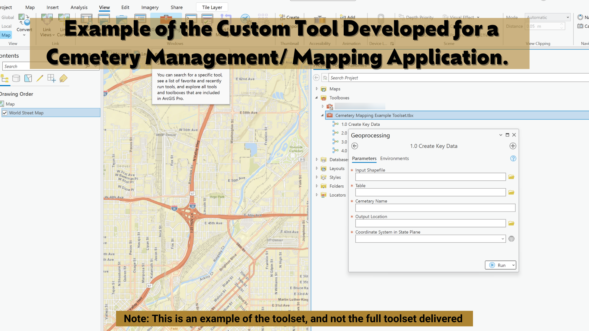

The client was doing serious, meaningful work — deploying ground-penetrating radar to locate unmarked burials in cemeteries across the country. The field collection was meticulous. The problem was everything that happened after they came back from the field.
Every project lived in its own desktop publishing file. Maps were made in software designed for print layouts, not spatial data. GPS points collected in the field had to be manually reconciled with .dxf CAD exports. Headstone transcription data — who was buried where — had no reliable way to stay connected to the correct GPS point. Each project was essentially a dead end: done, archived, inaccessible.
There was no master database. No way to search across projects. No way to share data with genealogy organizations who could use it. The company was building a rich record of community history and had no infrastructure to keep it alive.
I came in and met with the client directly — not to present solutions, but to understand the work. What did the field collection actually look like? Where did data go when crews got back? Where did things break down, and what were they trying to do that the current system made impossible?
Three core problems surfaced. First, the data pipeline was manual and fragile — GPS points collected in the field had to be painstakingly matched to transcription data by hand, with no reliable way to confirm the match was correct. Second, nothing was scalable — each project started from scratch with no reusable components. Third, the data was effectively locked up — stored in formats that couldn't be shared, searched, or used by outside organizations.
From those conversations I scoped the solution, designed the system architecture, and built every piece of it myself.
I built the solution entirely myself — from the initial needs assessment through tool development, testing, and training. The solution ran on Esri's platform because the team already had licenses, and the goal was to embed everything into infrastructure they owned and could maintain independently.

One of the things I care most about in consulting work is whether the client can keep going after you leave. Tools that require the consultant to operate them aren't solutions — they're dependencies.
I delivered all the training myself. Not documentation handed off at the end, but working sessions where I sat with the team, walked through each tool, explained the decisions behind the design, and made sure they could troubleshoot when something unexpected happened. By the end, the team was running the system independently. They didn't need to call me.

The most important outcome wasn't the speed improvement — though that was real and significant. It was that the company could now actually use what they were collecting. Headstone transcription data, GPS coordinates, and site imagery were all connected, searchable, and shareable. Genealogy organizations could access records. Communities could find their history.
The team left the engagement with full ownership of the system. No ongoing retainer needed. No "call us when something breaks." They could adapt the tools as their work evolved, train new staff, and extend the system to new projects — because they understood it from the inside out.
That's what I aim for every time.